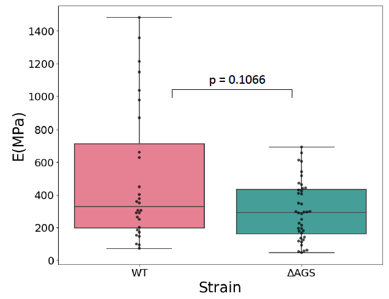
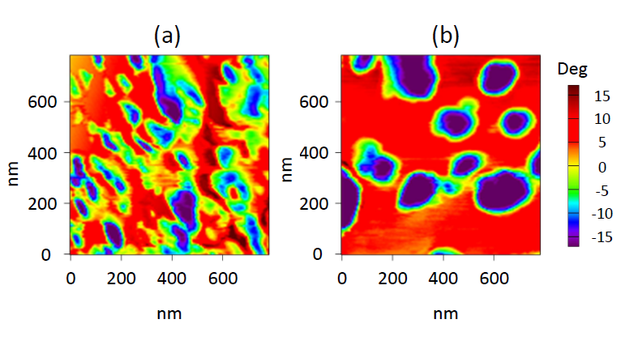
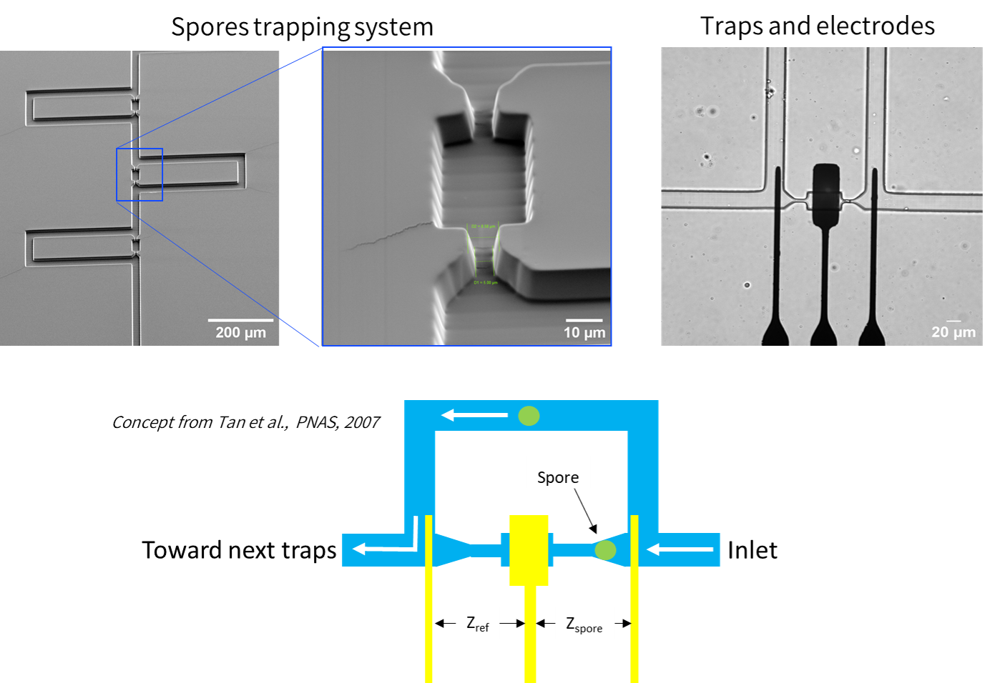
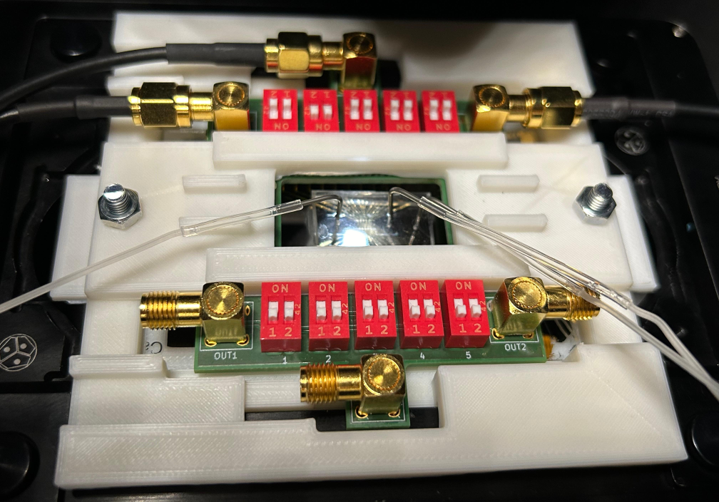

Local stiffness
Force–indentation experiments using a sufficiently rigid cantilever gave Young’s modulus values in the range of hundreds of MPa. Wild-type spores showed a broader distribution and tended toward higher values than ΔAGS.

Characterize spores
Mechanical measurements compare wild-type (WT) and mutant spores (ΔAGS), while a dedicated microfluidic EIS platform prepares the way for single-spore electrical characterization.
Local mechanical characterization
The ΔAGS strain is a B. cinerea mutant developed by the MAP laboratory to investigate the role of α-glucans in the fungal cell wall. These polysaccharides are found at the spore surface and may contribute to adhesion during germination.
Force–indentation experiments using a sufficiently rigid cantilever gave Young’s modulus values in the range of hundreds of MPa. Wild-type spores showed a broader distribution and tended toward higher values than ΔAGS.

NAP-mode measurements highlighted a more heterogeneous local surface response for the wild-type strain, while ΔAGS showed more clearly defined regions of energy dissipation.

Whole-spore response
To probe the global mechanical response, a tipless AFM cantilever compressed whole spores. Approximately 100 force–deformation curves were recorded per strain at applied forces of 3 µN and 6 µN.
The difference between strains was statistically significant: ΔAGS spores exhibited larger deformation values than wild-type spores under the same load, suggesting a softer global mechanical response.
A measurable mechanical phenotype associated with alteration of the fungal cell wall.
Electrical characterization
The device combines a trapping microchannel with microelectrodes patterned on a glass substrate. Each trapping site is associated with a set of electrodes so that one immobilized particle can be electrically probed by Electrical Impedance Spectroscopy (EIS).

The microfluidic system for EIS must be compatible with placement under an optical microscope and capable of accommodating fluidic and electrical connections. To this end, an interface has been designed to ensure quick and easy positioning and contact establishment.

Measurement chain
The platform was integrated with a Zurich Instruments HF2LI lock-in amplifier and transimpedance electronics. A reusable mechanical frame aligns the microfluidic stamp, electrode substrate and electrical contacts.
At the end of the thesis, the microfluidic system was fully assembled and preliminary tests with polystyrene beads had been performed. Biological impedance signatures of B. cinerea spores is a work under progress.
Electrical signatures has the potential to provide complementary information about fungal wall structure, mutations and possibly nucleus number.